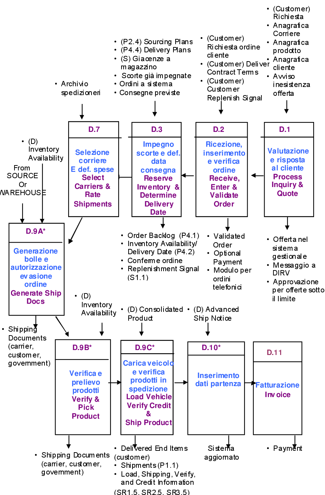
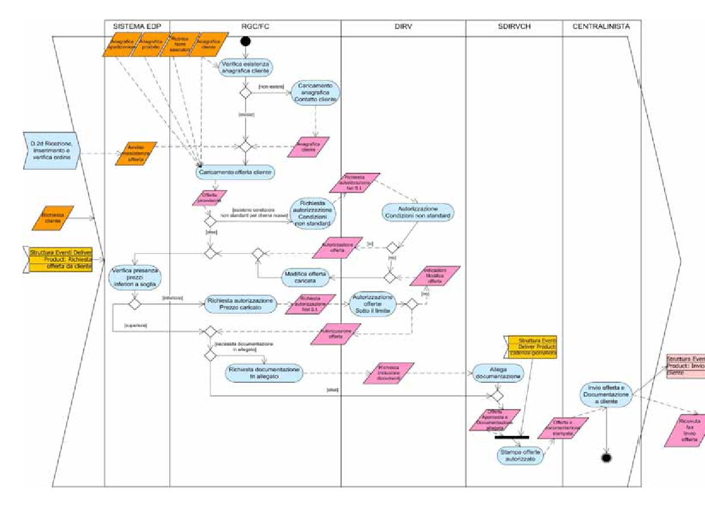
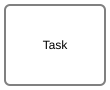
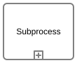

Indice del modulo
1 Rappresentazioni sintetiche
Rappresentare un processo significa renderlo leggibile a colpo d'occhio. Le forme sintetiche precedono i diagrammi e ne preparano i contenuti.
1.1 Tabelle e matrici
Tabelle e matrici organizzano in righe e colonne gli elementi del processo: attività e responsabili, dati gestiti, variabili e valori, rischi e contromisure. Sono rapide da compilare e confrontare, non richiedono strumenti grafici e costituiscono una buona verifica preliminare prima di disegnare una process map o un diagramma BPMN.
Una matrice CRUD mette in relazione le attività con gli oggetti informativi che il processo crea, legge, aggiorna o elimina. CRUD è l'acronimo di Create (creare), Read (leggere o consultare), Update (modificare) e Delete (eliminare). La matrice aiuta a scoprire dati non gestiti, duplicazioni, aggiornamenti senza responsabile e cancellazioni che richiedono una regola di conservazione. Una stessa attività può avere più lettere sullo stesso oggetto, per esempio CR quando crea un ticket e ne legge contestualmente i dati di contatto.
Esempio CRUD sul processo APQC 6.2.2 Manage customer service problems, requests, and inquiries:
| Activity | Ticket / richiesta | Storico cliente | Articolo knowledge base | Esito / risposta | Opportunità commerciale |
|---|---|---|---|---|---|
| 6.2.2.1 Ricevere | C | R | — | — | — |
| 6.2.2.2 Analizzare | RU | R | R | U | — |
| 6.2.2.3 Risolvere | U | R | R | C/U | — |
| 6.2.2.4 Rispondere | R | — | R | U | — |
| 6.2.2.5 Identificare upsell/cross-sell | R | R | — | R | C |
| 6.2.2.6 Consegnare alle vendite | R | — | — | R | CU |
La matrice RACI risponde invece alla domanda "chi fa che cosa?". Per ogni attività si incrociano i ruoli e si assegna una delle quattro responsabilità: R — Responsible, esegue il lavoro; A — Accountable, risponde del risultato finale e approva; C — Consulted, viene consultato prima della decisione; I — Informed, riceve aggiornamenti o l'esito. È buona pratica avere almeno un R e un solo A per attività, salvo una scelta organizzativa esplicita. R e A possono coincidere quando chi esegue è anche il titolare del risultato.
La guida in italiano di Microsoft Learn — Definire ruoli e responsabilità presenta la procedura per costruire una RACI e un esempio concreto. La tabella seguente applica la stessa logica, come esempio didattico, al customer service APQC.
| Activity | Customer Service Representative | Customer Service Manager | Specialista tecnico | Team Vendite | Cliente |
|---|---|---|---|---|---|
| Ricevere la richiesta | R | A | I | I | C |
| Analizzare problema o quesito | R | A | C | I | C |
| Risolvere la richiesta | R | A | C/R | I | C |
| Rispondere al cliente | R | A | C | I | I |
| Identificare opportunità upsell/cross-sell | R | A | C | C | I |
| Trasmettere opportunità alle vendite | R | A | I | C/R | I |
La CRUD e la RACI descrivono due aspetti diversi e complementari: la prima segue il ciclo di vita delle informazioni, la seconda assegna responsabilità organizzative. Se la RACI mostra un'attività senza R, il lavoro non ha esecutore; se la CRUD mostra un oggetto senza C o U, il dato potrebbe non avere un punto di creazione o aggiornamento. Le due matrici possono quindi essere usate insieme per controllare completezza e coerenza della scheda di processo.
1.2 SIPOC: struttura e uso
Il SIPOC è una vista ad alto livello del processo articolata in cinque colonne: Suppliers (fornitori), Inputs (ingressi), Process (macro-fasi), Outputs (risultati) e Customers (clienti o destinatari). La definizione e l'uso didattico riprendono la descrizione dell'American Society for Quality: il SIPOC si compila dopo aver fissato evento di avvio e risultato finale, prima del dettaglio di Activity e Task.
La colonna Process contiene poche macro-fasi, normalmente cinque-sette, e non l'elenco dei Task. Il modello permette di verificare che ogni input abbia un fornitore, ogni output abbia un cliente e che il perimetro sia condiviso dagli stakeholder. Supplier e Customer possono essere interni o esterni; input e output possono essere dati, documenti, materiali, decisioni o servizi.
La stessa tabella usata per l'esempio APQC della Category 6.0 — Manage Customer Service — viene riportata qui come modello completo per la lettura di un SIPOC:
| Supplier | Input | Process (macro-fasi) | Output | Customer |
|---|---|---|---|---|
| Cliente; canali di contatto (telefono, email, chat, portale) | Richiesta, problema o quesito; storico cliente; SLA contrattuali | Ricevere la richiesta → analizzarla → risolverla (o identificare upsell) → rispondere al cliente → trasmettere l'opportunità alle vendite | Richiesta risolta e risposta al cliente; eventuale lead commerciale | Cliente finale; team Vendite per le opportunità identificate |
Il SIPOC non sostituisce la scheda processo o il diagramma BPMN: li prepara, rendendo espliciti gli scambi ai bordi del processo. Dalla tabella si può poi passare alla process map, distribuire le macro-fasi nelle corsie e dettagliare le eccezioni con gateway ed eventi.
2 Process map e swimlane
I diagrammi di flusso mostrano la sequenza delle attività e le decisioni. Le corsie aggiungono la dimensione della responsabilità.
2.1 Mappa di processo per fasi
La process map dispone le attività nell'ordine di esecuzione, con i punti di decisione, gli input e gli esiti. Evidenzia ripetizioni, attese e passaggi di consegna ed è la base per discutere semplificazioni. Nel caso SAEM la stessa area di processo può essere letta con due prospettive complementari: la rappresentazione SCOR dei macro-processi di consegna e la rappresentazione UML/Eriksson–Penker del flusso organizzativo e informativo.
La tavola SCOR mostra D1 — Deliver Stocked Product e D2 — Deliver Make-to-Order Product come una catena di elementi D.1–D.11: valutazione e risposta al cliente, ricezione e validazione dell'ordine, impegno delle scorte, selezione del corriere, generazione dei documenti, prelievo, carico/spedizione, aggiornamento della partenza e fatturazione. Le frecce e i dati ai bordi rendono visibili le dipendenze con piani, disponibilità, cliente e magazzino.

La tavola UML/Eriksson–Penker dettaglia invece la preparazione dell'offerta D.1 attraverso corsie organizzative, oggetti informativi, attività, decisioni e flussi. È orientata in orizzontale per rendere leggibili le corsie e i nomi degli oggetti.

Il confronto è utile perché SCOR fornisce una vista standardizzata e comparabile del processo end-to-end, mentre UML/Eriksson–Penker rende più espliciti ruoli, oggetti e regole locali. Le due mappe non sono concorrenti: la prima aiuta a collocare il processo nella catena di fornitura, la seconda aiuta a progettare o verificare il flusso operativo.
3 Cenni a BPMN
BPMN (Business Process Model and Notation) è lo standard OMG per rappresentare i processi in modo formale, con un insieme di simboli condiviso. La BPMN Reference ufficiale di Camunda presenta gli elementi principali della notazione e il loro significato.
3.1 Elementi di base
La BPMN Reference di Camunda distingue gli elementi di flusso in eventi, attività e gateway. Gli eventi indicano qualcosa che accade, le attività indicano lavoro da svolgere e i gateway controllano la convergenza o la divergenza dei percorsi. Le corsie aggiungono la responsabilità, ma non cambiano il significato dell'elemento.
Eventi. Il bordo del cerchio e il simbolo interno precisano il comportamento: un evento di start crea una nuova istanza o avvia un sotto-processo; un evento intermedio può attendere (catch) o generare (throw) un accadimento mentre il flusso è attivo; un evento end conclude un percorso. Un bordo pieno identifica normalmente un evento interrupting, mentre un bordo tratteggiato indica un evento non-interrupting che apre un ramo lasciando proseguire l'attività principale.
| Famiglia / icona | Significato | Uso tipico nel modello |
|---|---|---|
Start none | Avvio senza trigger esterno esplicito. | Usarlo quando il diagramma parte da una condizione già assunta, per esempio l'apertura giornaliera del lavoro. |
Start message | Un messaggio ricevuto avvia l'istanza. | Ricezione di una richiesta cliente o di un ordine da un canale esterno. |
Intermediate catch | Il processo attende un evento, come messaggio, timer o condizione. | Attendere la risposta del cliente, la scadenza di uno SLA o una data di consegna. |
Intermediate throw | Il processo genera un'escalation verso un gestore o un processo padre. | Segnalare un caso oltre soglia senza trattarlo automaticamente come errore. |
Boundary error | Rileva un errore durante l'attività a cui è attaccato e devia il flusso. | Gestire un pagamento rifiutato o un'integrazione indisponibile mentre il Task è in esecuzione. |
End | Chiude il percorso; il simbolo interno può indicare messaggio, errore, escalation o terminazione. | Concludere con risposta al cliente, fatturazione o comunicazione di esito. |
Attività. Il rettangolo arrotondato rappresenta lavoro. Un Task è atomico; un Sub-Process contiene un flusso dettagliato e può essere collassato; una Call Activity richiama un processo globale riusabile. I tipi di Task (user, manual, service, send, receive, business rule e script) specificano chi o che cosa esegue il lavoro e sono approfonditi nel Modulo 4.
| Attività / icona | Spiegazione | Esempio |
|---|---|---|
 Task | Unità atomica di lavoro con un esito osservabile. | Classificare la richiesta cliente. |
 Sub-Process | Raggruppa un flusso interno per nascondere o espandere il dettaglio. | Gestire l'escalation tecnica con più passi. |
Call Activity | Richiama un processo globale riusabile da più processi. | Richiamare il processo condiviso di verifica cliente. |
Gateway. Il rombo non esegue lavoro: valuta o sincronizza il flusso. XOR segue una sola alternativa; AND apre o ricongiunge tutti i rami paralleli; OR segue una o più alternative in base alle condizioni; il gateway event-based attende il primo evento disponibile. La decisione deve essere preparata da un Task o da dati già disponibili, e le condizioni vanno scritte sui flussi in uscita.
| Gateway / icona | Spiegazione | Esempio |
|---|---|---|
XOR | Seleziona esattamente un percorso. | Richiesta completa oppure richiesta da integrare. |
AND | Avvia tutti i rami e li sincronizza al ricongiungimento. | Verifica tecnica e verifica contrattuale in parallelo. |
OR | Avvia una o più alternative compatibili. | Inviare risposta standard e, quando necessario, attivare anche il team vendite. |
Event-based | Il primo evento che si verifica determina il percorso; gli altri vengono scartati. | Attendere risposta cliente oppure scadenza dello SLA. |
Flussi e frecce. Il flusso di sequenza collega elementi dello stesso pool e indica l'ordine di esecuzione. Un flusso condizionale esplicita una condizione in uscita da un'attività; il flusso di default identifica il ramo scelto quando nessuna condizione è vera. Il flusso di messaggio collega pool diversi e non va usato per sostituire un normale passaggio tra corsie dello stesso pool. L'associazione tratteggiata collega annotazioni o dati senza controllare la sequenza.
| Tipo di collegamento | Icona | Significato |
|---|---|---|
| Sequence flow | Ordine normale di esecuzione nello stesso pool. | |
| Conditional flow | Ramo percorso quando la condizione associata è vera. | |
| Default flow | Ramo di fallback quando nessuna condizione precedente si applica. | |
| Message flow | Messaggio tra partecipanti o pool distinti; non rappresenta la sequenza interna. |
Usare gli eventi come raccordo. Un evento non è una decorazione: va collegato con un flusso coerente con il suo comportamento. Per un trigger, si può usare un Message Start Event «Richiesta cliente ricevuta» collegato direttamente al Task «Registrare richiesta»; se il processo è già attivo e deve attendere una risposta, si usa invece un Intermediate Message Catch Event dopo un Task di invio o in un gateway event-based. Per un escalation, si può collegare un Escalation Throw Event a un Sub-Process o a un'attività e riceverlo con un Escalation Boundary Event o con un Event Sub-Process nel processo padre: il ramo di escalation può interrompere l'attività oppure, con bordo tratteggiato non-interrupting, avviare una gestione parallela lasciando proseguire il lavoro principale.
La differenza tra evento di avvio e evento di raccolta è quindi temporale e semantica: lo Start Event crea il token iniziale, il Catch Event attende un evento durante un percorso già aperto, il Throw Event lo produce e l'End Event chiude il percorso. Questa regola evita di usare un gateway o un Task come sostituto improprio di un evento.
3.2 Quando serve una notazione formale
Una notazione formale conviene quando il diagramma deve essere interpretato senza ambiguità da persone diverse, quando descrive percorsi alternativi e condizioni, o quando è il punto di partenza per l'automazione.
Per una panoramica rapida, SIPOC e process map restano più economici.
4 Visualizzare gli esempi con Camunda
I file esempi-apqc/<dominio>/processo.bpmn contengono i sette processi in notazione BPMN 2.0 con corsie per ruolo, pensati per essere proiettati e discussi in aula. Si aprono con Camunda Modeler, gratuito, senza alcun motore di esecuzione collegato.
Per la demo con Camunda Web Modeler usare come traccia la guida ufficiale Model your first diagram: creare il diagramma online, aggiungere evento iniziale, attività, evento finale e collegamenti, quindi confrontare il risultato con uno dei processi BPMN del repository.
Come esempio avanzato e blueprint da caricare nel Web Modeler usare Credit Card Fraud Dispute Handling del Camunda Marketplace. Il modello mostra l'orchestrazione di attività automatiche e manuali nella gestione di una contestazione per frode; il file BPMN è disponibile anche come download BPMN da importare nel Web Modeler.
Un secondo esempio e blueprint da caricare nel Web Modeler è Loan Origination and Processing. Il modello rappresenta l'iter digitale di istruttoria e concessione di un prestito, con l'obiettivo di ridurre i tempi di approvazione e i passaggi manuali; il relativo file BPMN può essere importato nel Web Modeler.
In aula: aprire due esempi — tra cui customer service o IT, che includono un gateway esclusivo — e leggere insieme corsie, eventi e diramazioni; poi chiedere ai partecipanti di aggiungere un ramo di eccezione o un ruolo mancante.
Per chi vuole approfondire, un assistente AI collegato a Camunda tramite MCP può generare la prima bozza del diagramma da una scheda processo. La revisione del diagramma resta sempre a carico dell'analista.
5 Laboratorio
Aprire due esempi APQC in Camunda Modeler. Per ciascuno: identificare corsie, evento di innesco, evento finale e gateway. Aggiungere un ramo di eccezione plausibile e salvarne una copia.
Punti chiave
- SIPOC e tabelle fissano confini e scambi prima del dettaglio grafico.
- La process map mostra sequenza e decisioni; le corsie aggiungono la responsabilità e rendono visibili gli handoff.
- BPMN è lo standard OMG: evento, attività, gateway, flusso di sequenza e corsie sono gli elementi di base.
- I file .bpmn del corso servono a visualizzare e discutere gli esempi; un assistente AI via MCP può produrre una bozza, ma la revisione è dell'analista.